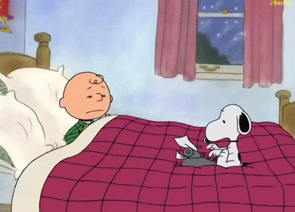

|
• Reprocesamiento de memoria fuera de línea, cuando el cerebro consolida las tareas de aprendizaje y memoria y apoya y registra el estado de vigilia • Rreparación para posibles amenazas futuras • Simulación cognitiva de experiencias de la vida real • Ayuda a desarrollar capacidades cognitivas • Refleja la función mental del inconsciente de una manera psicoanalítica • Un estado de conciencia único que integra la experiencia del presente, el procesamiento del pasado y la preparación para el futuro • Un espacio psicológico donde el ego soñador reúne nociones abrumadoras, contradictorias o sumamente complejas, que serían inquietantes cuando estamos despiertos, así satisfaciendo la necesidad de equilibrio y balance psicológico Mucho se desconoce sobre los sueños. Por su naturaleza, son difíciles de estudiar en un laboratorio, pero la tecnología y las nuevas técnicas de investigación pueden ayudar a mejorar nuestra comprensión de los sueños. |
| • Un sueño (0.5%) contuvo una memoria episódica. •La mayoría de los sueños del estudio (80%) contuvieron incorporaciones de la memoria autobiográfica de bajas a moderadas. Los investigadores sugieren que los recuerdos de experiencias personales se experimentan de forma fragmentaria y selectiva durante los sueños. El propósito podría ser integrar estos recuerdos en la memoria autobiográfica perdurable. Una hipótesis que afirma que los sueños reflejan experiencias de la vida consciente cuenta con el respaldo de estudios que investigan los sueños de pacientes psiquiátricos y pacientes con trastornos del sueño. En pocas palabras, los síntomas y los problemas diurnos se reflejan en los sueños. |
 |